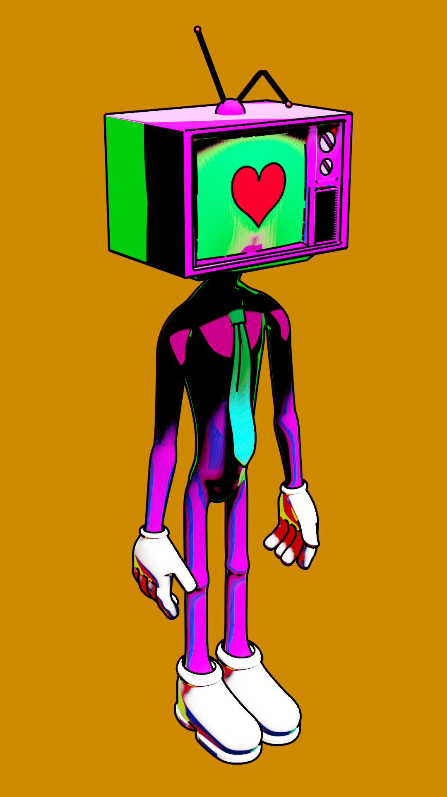

Tvstar
Tvstar es un modelado que rinde homenaje a los shaders usados en Spiderman: A través del multiverso. Este personaje está concebido para funcionar como un avatar personal, una representación icónica del propio autor. Crecido bajo la influencia de la televisión, Tvstar encapsula una identidad artística formada por referencias visuales de la cultura televisiva. Es un símbolo de cómo los medios de comunicación moldearon la visión creativa del artista, haciéndolo su icon dentro de su obra personal.
